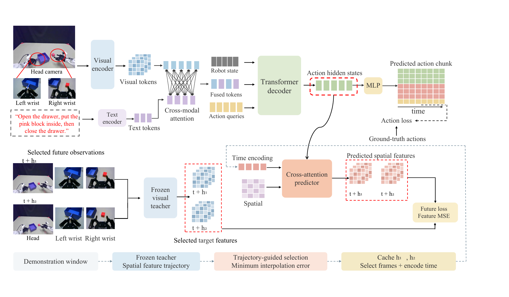

Task-conditioned encoding
Multi-view observations interact with language instructions to form task-aware visual tokens.
Learning to Anticipate for Efficient
Vision-Language-Action Policies
1 Beihang University (buaa.edu.cn)
2 Nanyang Technological University (ntu.edu.sg)
Learning from future observations. Acting on the present.
Compact vision-language-action policies offer efficient robot control, but action imitation alone does not explicitly supervise the prediction of future visual observations. Future Forcing enriches action representations with future-feature supervision. A shared time-conditioned predictor estimates teacher features at trajectory-guided future horizons, while the policy learns to generate continuous action chunks. The auxiliary teacher and predictor are used during training; execution retains the direct action-generation pathway.

Multi-view observations interact with language instructions to form task-aware visual tokens.
A compact decoder combines these tokens with robot state to produce hidden representations and continuous action chunks.
Selected future observations provide spatial feature targets that shape the same action representations during training.
Explore recorded comparisons across simulation and the real robot.
Outcome-selected examples, not aggregate success rates. Real-robot initial scenes and recording lengths differ across methods; camera views are synchronized within each run.
| Benchmark | Baseline | Future Forcing |
|---|---|---|
| LIBERO | 96.25% | 96.90% |
| MetaWorld MT50 | 86.00% | 87.20% |
| Task | π0 | TurboVLA | Ours |
|---|---|---|---|
| Cup Stacking | 35% | 20% | 70% |
| Toothbrush Insertion | 50% | 55% | 75% |
| Shelf Placement | 55% | 75% | 85% |
| Block Insertion | 35% | 55% | 65% |
Reported experimental results. Simulation baseline: reproduced TurboVLA.
An English overview of the motivation, framework, and experimental findings.
English narration and embedded English subtitles. Narration is synthetic.